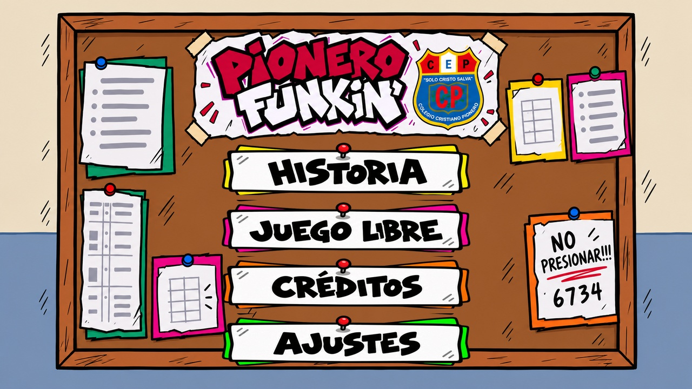
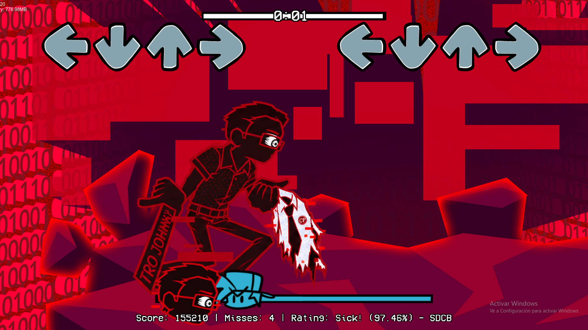
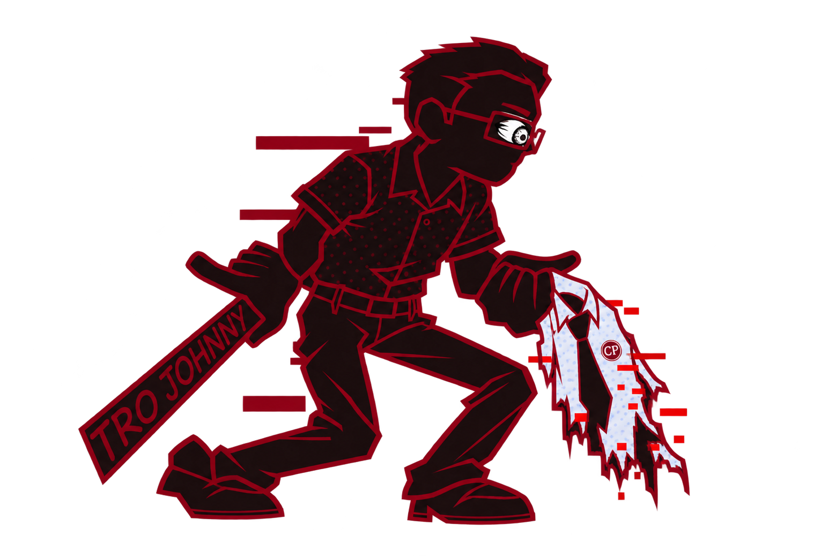

Elige dónde jugar
Descarga la versión para tu equipo e instala el mod.
Windows: extrae el ZIP completo. Android: instala el APK.
En esta versión
Nueva cinemática para la canción secreta, integrada antes de empezar la batalla.
Capturas y personajes
El menú, una de las batallas y los personajes del mod.


Personajes

Cómo instalarlo
Windows
- Descarga el archivo ZIP.
- Extrae todo su contenido en una carpeta.
- Abre Pionero Funkin.exe. Conserva los archivos juntos.
Android
- Descarga el archivo APK y ábrelo.
- Si Android lo solicita, permite la instalación desde la aplicación que usaste para abrirlo.
- Instala el mod. Si ya lo tienes, elige actualizar.
Por ahora no hay versión para iPhone o iPad.